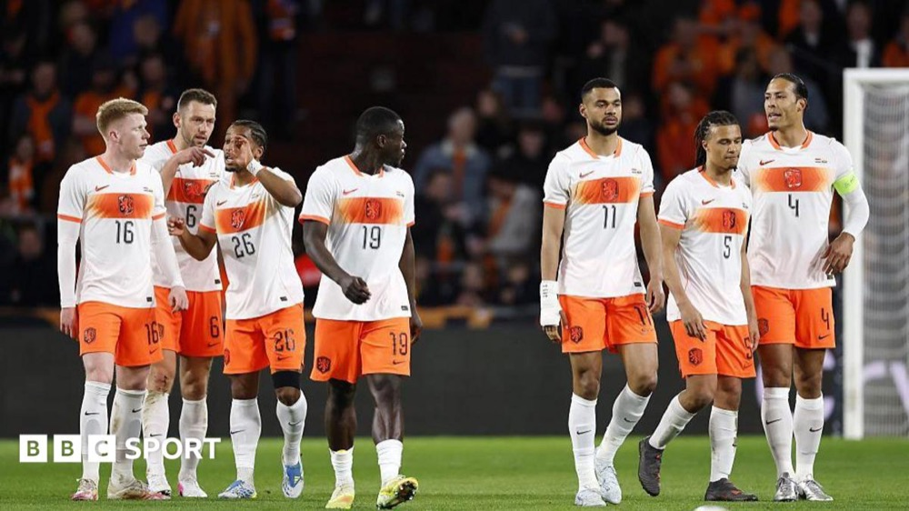
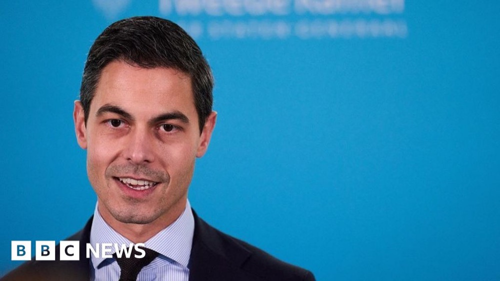
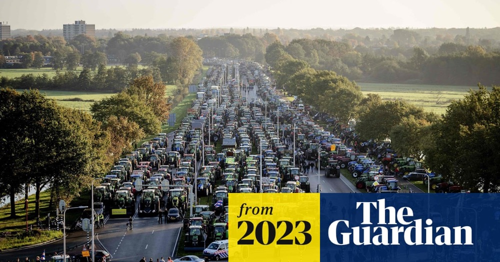
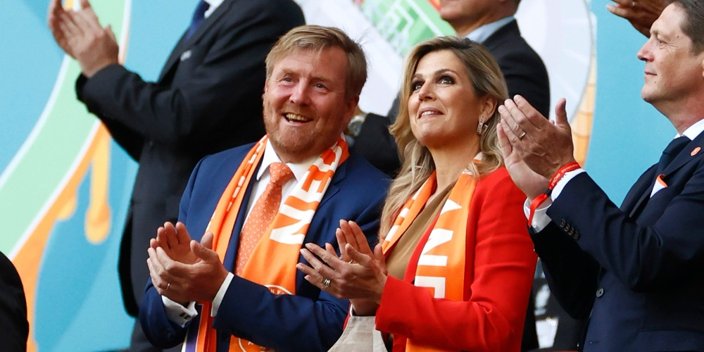
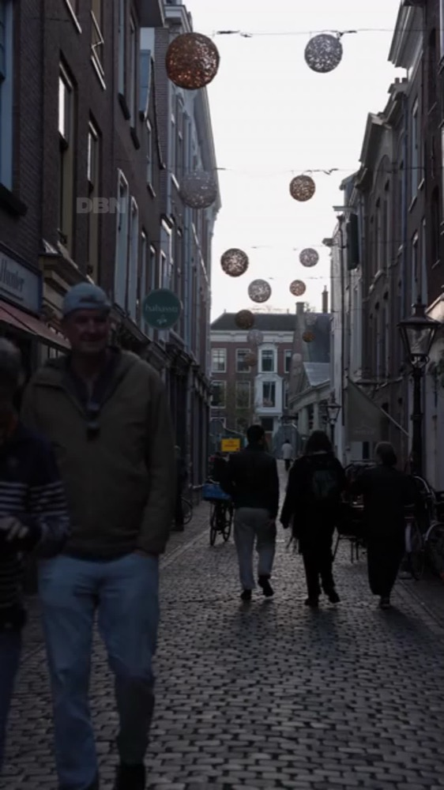
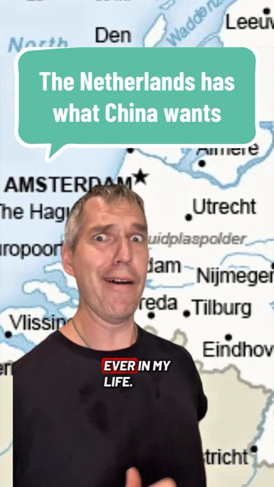
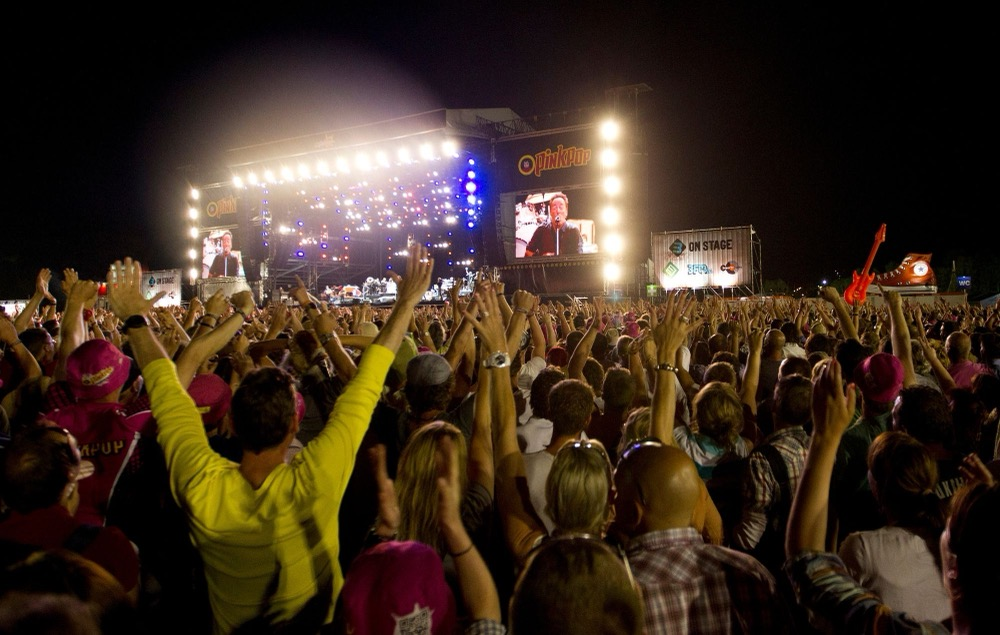

A letter from Tulp de Gid 🌷
Lieve Gelgotas, welcome, welcome. I am Tulp de Gid, and I will be your guide to this small, soggy, wonderful country you are about to call home. Every week I will write you a little letter with the news, a bit of gossip, and the words you will need, so that when you step off the plane you already feel like one of us. Pour yourself a coffee (we drink an alarming amount of it) and sit with me. Here is what your new country is talking about this week.
 The big story
The big story
Oh my dears, the whole country has turned orange
You have chosen quite a month to start watching us. The football World Cup has begun, and this year it is being played right on your side of the ocean, in the United States, Canada and Mexico. You must understand: we are completely, hopelessly mad for football, and our national team is called the Oranje, which simply means "the orange," after the colour we all wear. For the next month you will see whole towns dressed in orange, orange flags from the windows, even orange cakes in the bakery.
Our boys play their first match this Sunday, the 14th of June, against Japan, in Dallas of all places. We are the great heartbreakers of football: three times we have reached the final (in 1974, 1978 and 2010) and three times we have come home crying. We call our own team "the nearly men," and we adore them anyway. Put on something orange on Sunday and shout along with us.
 A few quick things, told quickly
A few quick things, told quickly
We have a brand-new prime minister, and a young one
His name is Rob Jetten, and he is only 38, the youngest leader we have ever had, and the first who is openly gay. He won a surprise election last autumn against a famous man of the hard right, which had us all talking at the kitchen table for weeks.
Now, a hard truth: finding a house is murder
I will not sugar it for you, lieverds. We are short something like 410,000 homes, and the prices climb and climb. It will be your very first job once you decide to come.
A great fuss about that American rapper
Ye, the one who used to be called Kanye West, is booked to play two concerts here this summer. After the terrible antisemitic things he has said, our government looked into banning him and decided it simply cannot, so a Jewish organisation has taken it to court. We are a tolerant people, but tolerance has its edges.

One silly little word that runs half our news
Do not laugh when you hear it: nitrogen. Because so much of our land sits below the sea and is packed with farms, a long court fight over nitrogen has frozen half the building in the country and sent the farmers onto the motorways with their tractors.

A sweet day for our king, and one frightening one
Our king, Willem-Alexander, has just turned 59. His birthday is a national holiday where the whole country dresses in orange and sells its old junk in the street. The frightening part: the police recently caught a man they say was plotting against the two young princesses.
 What the young people are watching
What the young people are watchingYou should know where an old woman like me steals half her news. These clever ones on the little phone screens explain our country to newcomers like you, and rather well.


 My little pick for the week
My little pick for the week
If you want a taste of our summer, look up Pinkpop, one of the oldest music festivals in the world, happening next weekend down in the south. This year the Foo Fighters, The Cure and Twenty One Pilots are headlining. Put a few of those bands on this weekend and you are practically here with me already.
That is all for this first letter. When you arrive I will tell you the rest in person, over the coffee. Until then, write back and tell me what you would like more of: the funny things, the food, the everyday, or the big news.
Tot ziens, my dears (that is our "see you soon"). Wear orange on Sunday.
Liefs, Tulp 🌷